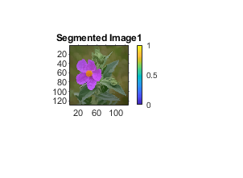
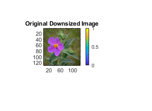
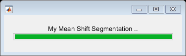
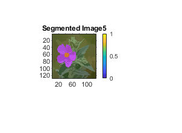

function myMeanShiftSegmentation
I2=imread('../data/flower.png');
I1=imresize(I2,0.5);
row=size(I1,1);
col=size(I1,2);
y=zeros(row,col,5);
myNumOfColors = 200;
myColorScale = [ [0:1/(myNumOfColors-1):1]' , [0:1/(myNumOfColors-1):1]' , [0:1/(myNumOfColors-1):1]' ];
colormap (myColorScale);
bar = waitbar(0,'My Mean Shift Segmentation ..');
path = '../Images/';
filename = strcat([path 'Original_Image_downsized.png']);
imwrite(mat2gray(I1), filename);
figure , imshow(mat2gray(I1)), colorbar;
title('Original Downsized Image');
for i=1:1:row
for j=1:1:col
y(i,j,1:3)=I1(i,j,1:3);
y(i,j,4)=i;
y(i,j,5)=j;
end
end
k=180;
h1=50;
h2=10;
for op=1:1:5
for i=1:1:row
for j=1:1:col
temp=y(max(1,i-20):min(row,i+20),max(1,j-20):min(col,j+20),:);
vec=reshape(temp,[size(temp,1)*size(temp,2),5]);
Idx = knnsearch(vec, reshape(y(i,j,:),[1,5]),'k',k);
Idx=Idx(1:k);
Z=vec(Idx,:);
Z1=Z;
X=reshape(y(i,j,:),[1,5]);
Z1(:,1:3)=exp(-((Z1(:,1:3)-X(1:3))./h1).^2);
Z1(:,4:5)=exp(-((Z1(:,4:5)-X(4:5))./h2).^2);
G=Z1(:,1).*Z1(:,2).*Z1(:,3).*Z1(:,4).*Z1(:,5);
G1=G.*Z;
G2=sum(G1);
G3=G2./sum(G);
y(i,j,1:3)=G3(1:3);
end
end
disp(op);
waitbar(op/5, bar);
filename = strcat([path 'Segmented_Image_' num2str(op) '.png']);
J = uint8(y(:,:,1:3));
imwrite(mat2gray(J), filename);
figure,imshow(J), colorbar;
title(strcat(['Segmented Image' num2str(op)]));
end
end
1
2
3
4
5
 

 